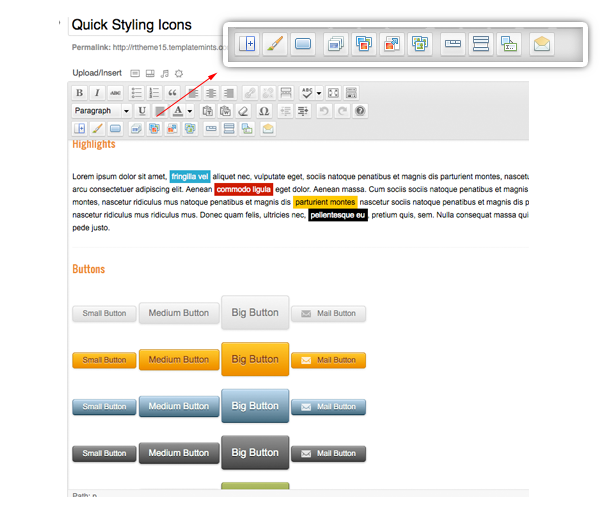

“RT-Theme 15 Wordpress Theme” Documentation by “Tolga Can”
“RT-Theme 15 Wordpress Theme”
Created: 01/11/2011
By: Tolga Can
Support: http://support.rtthemes.com
Email: ftolgacan@gmail.com
Twitter: twitter.com/ftolgacan
Thank you for purchasing my theme. If you have any questions that are beyond the scope of this help file, please feel free to post your questions on my support forum at http://support.rtthemes.com. Thanks so much!
{kind=link}
Table of Contents
- Installation
- RT-Theme Settings
- Main and Footer menus
- Home Page Contents
- Sidebar Contents
- Home Page Slider
- Portfolio Entries
- Product Entries
- Blog Entries
- Shortcode and Quick Styling Buttons
- JavaScript
- PSD Files
- Sources and Credits
- Version History
A) Installation - top
Upon downloading the .zip file from themeforest.net you'll have all files inside the theme package. Do not upload the entire file you get from ThemeForest, upload only the rttheme15 folder.
There are two ways to upload a theme;
1) Upload By FTP: Login your hosting space via an FTP software and upload the theme folder into wp-content/themes/ under your wordpress installation. Once you've uploaded the theme you can open Open WordPress Admin → Appearance→ Themes page and activate the theme from list.
2) Upload By Wordpress Admin:
- Zip the rttheme15 folder
- Open WordPress Admin → Appearance→ Themes
- Click Install Themes tab and hit upload link
- Find the the file you've zipped before and hit install now button
Installing WordPress http://codex.wordpress.org/Installing_WordPress
B) RT-Theme Settings - top
On wordpress admin area you'll see an additioal menu which named "RT-Theme 15"
B1) General Options- top
In the General Options page you will find some options for control your page without thounching codes. For exapmle; you can upload your logo, activate the twitter bar or remove the seach bar from top of the page.
B2) Typography Options- top
In this options page you will find all the typography related fields. You can turn on/off Cufon or Google fonts and select a new font family for several elements of your page like titles, page text or menu items. There is a one thing you may know, you shouldn't turn on two font replacement service in same time. (Google and Cufon)
B3) Slider Options- top
This options controls the home page slider. In order to change Transition Timeout, Slider Height, Transition Effect or remove the Slider Buttons you need to visit this page. You have two slider alternatives for the home page slider, you can select it from the list.
B4) Styling Options- top
Using Theme Stle option you can change the skin of your page, also there are plenty options to control Heading's color, Body Font Color and Menu Color.
Please note: If you want to select a new background image or new background color, you can use Appearance → Background page of the WordPress.
B5) Sidebar Creator - top
This options gives you chance to take control of your web site. You can create a new sidebar for the contents which you want to display it. For example: If you want to put a Text Widget (or anyone) only for yout About Us and Contact Us pages, you just need to select those two pages and hit the Save Options button. Then go to Appearance → Wigets page and drag&drop widgets into the sidebar you created.
Widget Caller Shortcode
As you can read with the description above the code on Sidebar Cretor page; you also call the sidebar which you created as a content by using this shortcode. This options will be help you mix Sidebars and Home Page contents. For example; You have three content boxes on your home page and you want to display tour twitter feeds in the middle of the content column. Once you've copied the Shortcode, go to Home Page → Add New Box and paste the code into the content area. Then go to Appearance → Wigets page and drag&drop widgets into the sidebar you created. Please note you're free to leave blank all the title fields both home page contents and widget you'll use.
Apart from the 'Product Free Tabs' you can use this shorcode any place you want. Just remember that the sidebar will displayed top of the contents.
B6) Portfolio Options- top
Use this options to control your portfolio pages.
B7) Product Options- top
Select Your Product List Page: Choose a product list page even if you don't want to use on menu bar, this page is the start page of your product showcase.
Select Product Page Start Category: As default, RT-Theme shows all products on start page. You may want to show your selected products like "featured products" In this case you need to select a start category.
Products on Start Page: If you want to remove products from the start page of product catalogue check this option. You can put your content in the "product list page" by using Pages -> Edit
OrderBy Parameter: Choose a parameter to sort your products by.
Order: Designates the ascending or descending order of the ORDERBY parameter
Besides these options, you'll find more usefull options related with products.
B8) Blog Options- top
Select Blog Categories: Select categories which you want to show posts that assigned them on your blog page. If you don't select any category the blog start page will display all categories' posts.
Select Your Blog Page: Choose a Blog Start page even if you don't want to use on menu bar, this page is the start page of your blog page.
Blog Categories on Sidebar: Blog list pages resizes the featured images. If you want to use them as you've uploaded, use this box.
Blog Categories on Sidebar: You can show or hide the blog categories on sidebar of your blog pagas, single blog posts
Besides these options, you'll find more usefull options about blog posts.
B9) Contact Page Options- top
If you would like to have same contact us page on demo site ( http://rttheme15.templatemints.com/contact-us ) you must use these options. There are easy steps you need to complate to create the page;
- Add a new blank page, for example 'Contact Us'
- Go to RT-Theme Contact Page Options and select the page you created from 'Select Your Contact Page' list
- Fill the fields which related your contact informations such as address, tel, google map code etc.
- Hit 'Save Options'
In order to have a customized contact form, you can use 3rd party plugins like 'Contact Form 7' If you paste the plugin's shortcode into the relevant text field the contact us page will automatically display your customized contact form.
- top
To activate the social media icons bottom of the sidebar you need to use this options page.
B11) Theme Updates- top
If there is a new update for the theme, you'll be informed by the theme admin panel and able to see update notes.
C) Main and Footer menus - top
There are three embeded menu of the theme; RT Theme Main Navigation and RT Theme Footer Navigation
{kind=link}
- Go, Wordpress Appearance → Menu
- Choose the menu you want to edit from the tabs
- Add your items, orginize them and click Save Menu button.
The Appearance Menus SubPanel is available beginning with Worpdress 3.0. If you're new on this new menu feature of wordpress please read this article carefully; http://codex.wordpress.org/Appearance_Menus_SubPanel
To use all items like products, portfolio items, tags etc. check the Screen Options to insure those modules are set to display.
{kind=link}
D) Home Page Contents- top
D1) Custom Posts- top
In order to add content to your home page you can use Home Page Contents custom post types.
- Go, Home Page Contents→ Add New Box
- Write the title and content
- Layout Options: Choose the column width of the box from layout options
- Custom Link: If you want to give a link to the title and a custom text under the content, place the link.
- Custom Link Text: The custom link text of your choice
{kind=link}
D2) Widgets- top
You can also use the widgets in home page. Go, Wordpress Appearance → Widgets and put any widget into the Widgetized Home Page Area. This widget will be appear above the Home Page Contens custom posts if you've set any.
E) Sidebar Contents- top
You can use the widgets to set your contents like photos, testimonials etc. They supports the shorcodes. Go, Wordpress Appearance → Widgets and put any widget into a sidebar. Also you'll find many custom widgets that coded just for the theme like twitter, flickr, recent posts etc.
F) Home Page Slider- top
You have two slider alternatives for the home page slider, you can select it from the list on RT-Theme Slider Options.
RT-Theme 15 → Slider Options → Select Home Page Slider
In order to add new slide to your home page slider you need to use Home Page Slider custom post types.
- Go, Home Page Slider → Add New
- Write the title and content
- Set the slider image
- Click Set featured image link right side of the post in add/edit slide.
- Choose an image and click Use as featured image link to set as featured.
- Close the lightbox and save your slide post.
- Fill the Custom Link part if you want to give link to the image and the title
- Fill the Custom Link Text to get another link under the text.
Important Please Read
- You can find the slider setting under RT-Theme → Slider Options.
- The slides ordering by publish dates, If you want to re-order the slides please change their publish dates.
{kind=link}
Setting featured images (Screenshots)

G) Portfolio Entries- top
In order to add new portfolio item you need to use Porfolio custom post types. There are several things you must know;
- Thumbnails for Vimeo and YouTube will be grabbed by the theme automatically. If you would like to change the thumbnail of the video use 'Alternate thumbnail image for the portfolio item'
- Example Portfolio Image URL
http://www.rtscripts.com/rt-theme4/style1/images/portfolio_pics/thumb2.jpg - Example VIMEO URL
http://vimeo.com/4321799 - Example YOUTUBE URL
http://www.youtube.com/watch?v=9BnLbv6QYcA
{kind=link}
H) Product Entries- top
In order to add new product item you need to use Product custom post types. There are several things you must know;
- Product Image Url
The main product image url. This image will use on listing page and right side of product detail page as thumbnail. When clicked it on detail page, original version will be opened by the lightbox. You can use a logical size image for this field. Thumbnails will be generated by the system automatically. It must be local link because of the resizer can't generates thumbnail images from a remote url. - You can put unlimited image for this product. Please put all the image links line by line. All these images will be resize automaticly. Leave blank if you don't need to additional product photos.
- Short description for product listing pages.
{kind=link}
Finding page/post ID
To find the Page ID, go to Pages->Edit and hover over the title of the page. The status bar of your browser will display a URL with a numeric ID at the end. This is the page ID.
Pages Widget http://support.wordpress.com/widgets/pages-widget/
Finding the WordPress Page ID http://www.techtrot.com/wordpress-page-id/
URLs of Media Files
When you've added new media file, the url appears on the bottom of the page.
How to Find the URL for an Image http://www.bestwpthemez.com/wordpress/how-to-find-the-url-for-an-image-937/
I) Blog Entries- top
Use regular posts to add new blog post. There is only one thing you need to know about blog posts that Featured Images
- Click Set featured image link right side of the post add/edit page.
- Choose an image and click Use as featured image link to set as featured.
- Close the lightbox and save your post.
J) Shortcodes and Quick Styling Buttons- top
RT-Theme comes with some great shortcodes that allow you to add photo galleries, contact forms and social media icons. In order to use them, you need to edit/add posts, pages or widgets and enter the shorcodes into the content area.
The RT-Theme Shortcode Buttons
You can find all the shortcodes and quick styling buttons on the the Visual view mode of the editor.

J1) Contact Form Shorcode- top
Sample Usage
[contact_form title="Contact Form" email="ftolgacan@gmail.com" text="(*) Aenean tincidunt pharetra leo. Curabitur euismod sollicitudin elit."]
Please note that you must only use one contact form shortcode in a single page. You don't have to use the title or text parameters. You can also use the code with the widgets for sidebars.
K) JavaScript - top
This theme imports these Javascript files.
jquery.min.js jquery.easing.1.3.js jquery.cycle.all.min.js jquery.tools.min.js jquery.prettyPhoto.js menu_min.js colortip-1.0-jquery.js jquery.popeye-2.0.4.min.js jquery.validate.js jquery.form.js jquery.tweet.js jflickrfeed.min.js script.js
1) jQuery http://jquery.com
jQuery is a Javascript library that greatly reduces the amount of code
that you must write.
2) jQuery Cycle - jQuery plugin http://malsup.com/jquery/cycle/
Cylcle script on sliding gallery
3) script.js - Coded by Tolga Can
Includes several functions
4) jQuery Easing - jQuery plugin http://gsgd.co.uk/sandbox/jquery.easing.php
Offers multiple easing options
5) jQuery PrettyPhoto jQuery plugin http://www.no-margin-for-errors.com/projects/prettyPhoto-jquery-lightbox-clone/
6) Cufon http://wiki.github.com/sorccu/cufon/about
jQuery UI JavaScript Library
7) jQuery Tools http://flowplayer.org/tools/index.html
jQuery Tools jQuery Plugin
8) jQuery Vertical Drop-Down Menu
Copyright Lukasz Czerwinski
http://codecanyon.net/item/jquery-vertical-dropdown-menu/161210
9) jQuery Popeye
Copyright (C) 2008 - 2010 Christoph Schuessler
http://dev.herr-schuessler.de/jquery/popeye/
10) jQuery Tweets
http://tweet.seaofclouds.com/
11) jQuery Nivo Slider
Copyright 2011, Gilbert Pellegrom
http://nivo.dev7studios.com
L) PSD Files - top
You can find all psd files that used with the theme in the PSD Files folder.
- There are several common psd files in the theme-parts folder such as logo, icons, pagination buttons etc.
- In skin folders there are two files, for example if you open skin-default folder you'll find skin-default.psd and back-curv.psd. In order to customize colors of a skin you can open these files, edit and save in the images folder. For example if you want to customize default skin, open the /skin-default/skin-default.psd change the color as you like and save as skin-default.png in the images folder.
M) Sources and Credits - top
I've used the following images, icons or other files as listed.
- Stock Photos by Envato
http://themeforest.net/page/asset_library - Icons By Andy Gongea
http://www.graphicrating.com/2009/06/19/quartz-icon-pack - Social Media Vector & Custom Shape Icon Set
http://lifetreecreative.com/icons/
O) Version History - top
You can find the version history (changelog) by visiting the Theme Updates page of the RT-Theme Options.
Once again, thank you so much for purchasing this theme. As I said at the beginning, I'd be glad to help you if you have any questions relating to this theme. No guarantees, but I'll do my best to assist. If you have a more general question relating to the themes on ThemeForest, you might consider visiting the forums and asking your question in the "Item Discussion" section.
Tolga Can